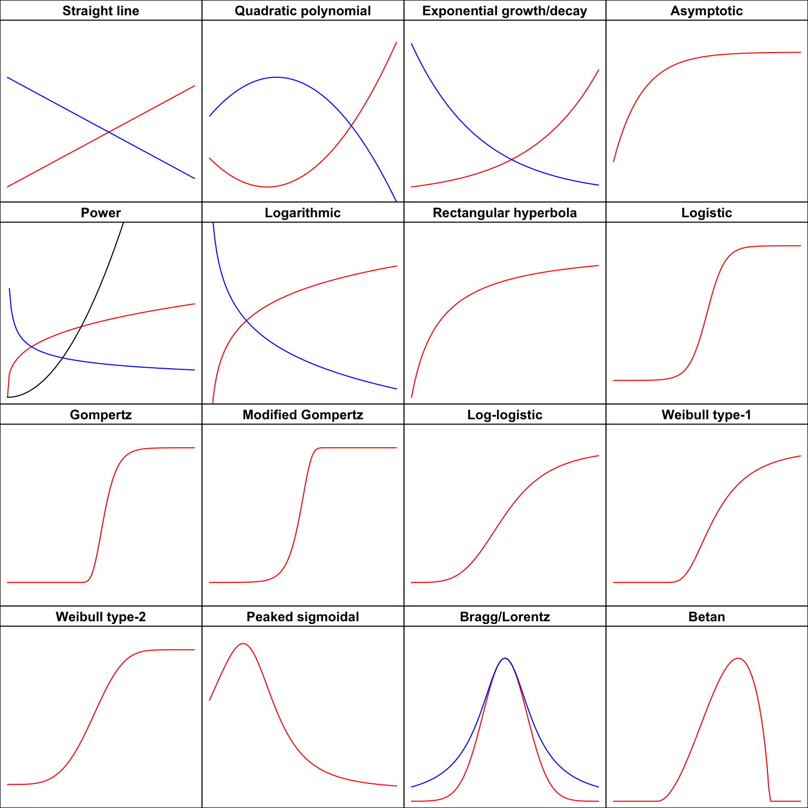
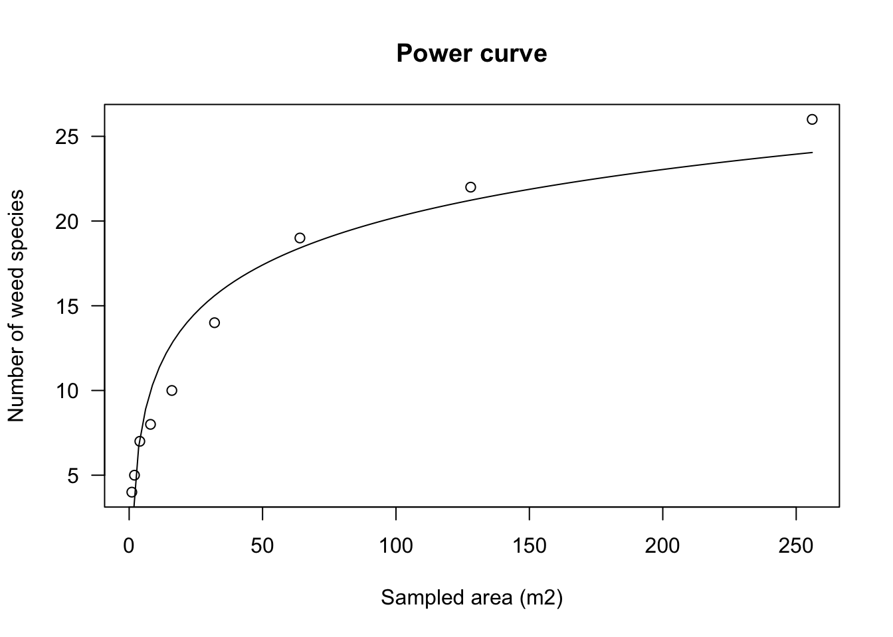
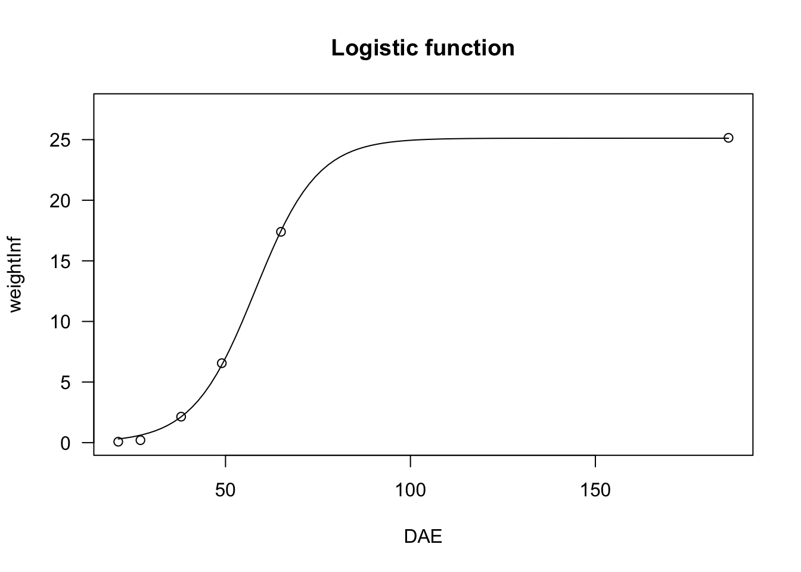
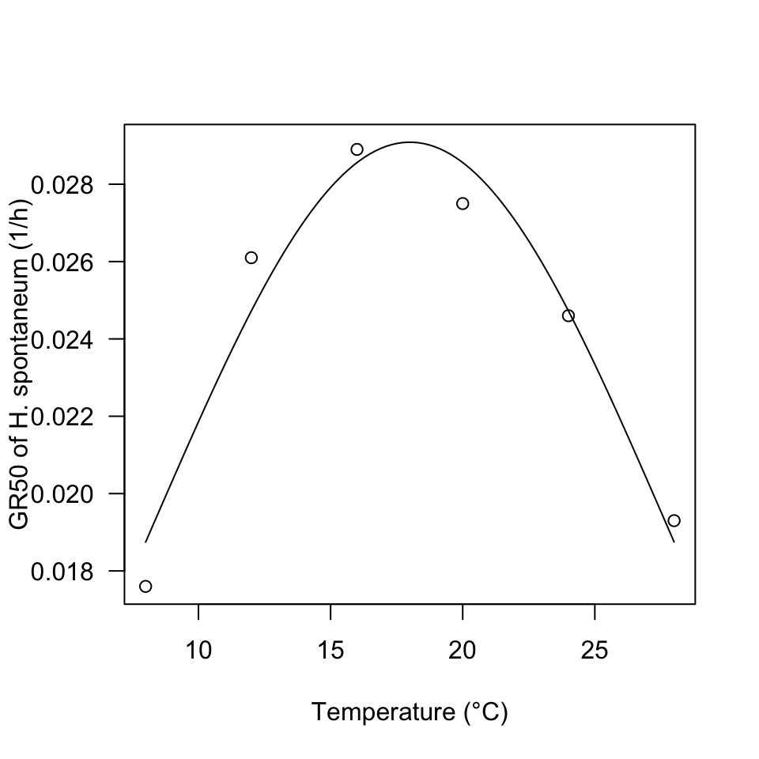

Usually, the first step in every nonlinear regression analysis is to select the function \(f\) that best describes the phenomenon under study. The next step is to fit this function to the observed data, possibly by using some sort of nonlinear least squares algorithm.
We have already devoted a post to the first task, which you can find at this link.
As for the second step, the main problem is that nonlinear least squares algorithms are iterative, in the sense that they start from some initial guesses for the model parameters, which are continuously improved until the least squares solution is approximately reached. Quite often, providing such initial guesses for all model parameters becomes a problem: if our guesses are not close enough to the least squares estimates, the algorithm may stall and fail to converge. Or, even worse, it may converge to the wrong solution. How do we obtain good initial guesses for the model parameters? This is not easily accomplished, especially for students and practitioners. This is where self-starters come in handy.
Self-starter functions can automatically calculate initial values for any given dataset and, therefore, they can make nonlinear regression almost as straightforward as linear regression. From a teaching perspective, this means that the transition from linear to nonlinear models is immediate and hassle-free.
In another post, at this link, I explained how self-starters can be built for both the nls() function in the ‘stats’ package and the drm() function in the ‘drc’ package (Ritz et al., 2019). In this post, I would like to provide an overview of the self-starting functions that already exist in R, either in the ‘stats’, ‘drc’, or ‘statforbiology’ packages. I do not aim for completeness here, as other packages also contain self-starters, such as the ‘nlraa’ package (Miguez, 2025), with which I am not sufficiently familiar. The exemplary datasets are included in the ‘statforbiology’ package and they all come from real field or greenhouse experiments; further information and citations to the original works can be found in my book (Onofri, 2026), or in the additional meterial at this link.
Functions and curve shapes
As in the other post, I have classified linear/nonlinear regression functions according to the shape they show when they are plotted in an x-y graph, following the approach taken in Ratkowsky (1990):
- Polynomials
- Concave/Convex curves (no inflection)
- Sigmoidal curves
- Curves with maxima/minima
To make navigation easier, you can first inspect Figure 1 to identify the type of curve of interest and then use the links above to jump directly to the corresponding section.
First of all, we need to install (if necessary) and load these packages, by using the code below.
# installing package, if not yet available
# install.packages("statforbiology")
# loading package
library(statforbiology)Polynomials
Straight line function
The equation is:
\[Y = b_0 + b_1 , X \quad \quad \quad (1)\]
Please check the details of parameter interpretation in my previous post. This is a linear model and, in R, linear regression is fitted by using the lm() function. However, in a few circumstances I have found it useful to fit a linear regression model by using nonlinear regression algorithms. I know that this is rather inefficient, but, as a partial excuse, I should say that some methods for ‘drc’ objects are also rather handy for linear regression, for example, to obtain parameter estimates and compare regression curves in ANCOVA models. For these unusual cases, we can use the NLS.linear() and DRC.linear() functions in the ‘statforbiology’ package.
Example 1
Let’s consider the ‘metamitron’ dataset, which is available in ‘statforbiology’. It describes the degradation of the sugarbeet herbicide metamitron (M) in soil, either alone or in the presence of two co-applied herbicides, namely phenmedipham (P) and chloridazon (C). Independent soil samples treated with the four herbicide combinations (i.e. M, MP, MC and MPC) were assayed at eight different times (0, 7, 14, 21, 32, 42, 55 and 67 days after treatment, with three replicates per sampling date) to determine the residual concentration of metamitron. In my book (Onofri, 2026, p. 212), I analysed this dataset by using linear regression. Here, instead, I would like to show how the same model can be fitted with the drm() function in the ‘drc’ package, obtaining the slopes and intercepts for all herbicide combinations directly from the output of the summary() method.
# Example of fitting four straight lines at once
library(statforbiology)
dataset <- getAgroData("metamitron")
model <- drm(log(Conc) ~ Time, fct = DRC.linear(),
curveid = Herbicide, data = dataset)
summary(model)
Model fitted: Straight line (2 parms)
Parameter estimates:
Estimate Std. Error t-value p-value
a:M 4.5159111 0.0577603 78.184 < 2.2e-16 ***
a:MP 4.6304853 0.0577603 80.167 < 2.2e-16 ***
a:MC 4.5401707 0.0577603 78.604 < 2.2e-16 ***
a:MPC 4.7546974 0.0577603 82.318 < 2.2e-16 ***
b:M -0.0386165 0.0015585 -24.777 < 2.2e-16 ***
b:MP -0.0318908 0.0015585 -20.462 < 2.2e-16 ***
b:MC -0.0231879 0.0015585 -14.878 < 2.2e-16 ***
b:MPC -0.0234014 0.0015585 -15.015 < 2.2e-16 ***
---
Signif. codes: 0 '***' 0.001 '**' 0.01 '*' 0.05 '.' 0.1 ' ' 1
Residual standard error:
0.1687429 (88 degrees of freedom)Quadratic polynomial function
The equation is:
\[Y = a + b\, X + c \, X^2 \quad \quad \quad (2)\]
Check the post at this link for details about the biological interpretation of the model parameters. In the same vein as the straight line function, a second-order polynomial can be fitted with the lm() function, but, if necessary, it can also be fitted with nls() or drm(), by using the functions NLS.poly2() and DRC.poly2().
Example 2
The dataset ‘waterProductivity’ in the ‘statforbiology’ package shows the relationship between water productivity in lettuce, as affected by the irrigation regime and as determined in a simulated experiment based on the data from Toscano et al. (2026). It is expected that the relationship under study may show a maximum at an intermediate irrigation regime, which is confirmed by fitting a second-order polynomial function. This same analysis could, of course, be performed more efficiently by using linear regression.
library(statforbiology)
dataset <- getAgroData("waterProductivity")
# nls fit
model <- nls(WP ~ NLS.poly2(Regime, a, b, c),
data = dataset)
#drc fit
model <- drm(WP ~ Regime, fct = DRC.poly2(),
data = dataset)
Model fitted: Second Order Polynomial (3 parms)
Parameter estimates:
Estimate Std. Error t-value p-value
a:(Intercept) 1.9187e+00 2.3171e-01 8.2806 1.679e-05 ***
b:(Intercept) 4.2977e-01 8.4554e-03 50.8287 2.217e-12 ***
c:(Intercept) -3.3618e-03 6.6586e-05 -50.4884 2.355e-12 ***
---
Signif. codes: 0 '***' 0.001 '**' 0.01 '*' 0.05 '.' 0.1 ' ' 1
Residual standard error:
0.1441625 (9 degrees of freedom)
Concave/Convex curves
Exponential function
The most common equations are:
\[Y = a e^{k \, X} \quad \quad \quad (3)\]
\[Y = e^{d + k \, X} \quad \quad \quad (4)\]
\[Y = a \, b^X \quad \quad \quad (5)\]
\[ Y = d \exp(-x/e) \quad \quad \quad (6)\]
and, for the cases where a lower asymptote \(c \neq 0\) is needed:
\[ Y = c + (d -c) \exp(-x/e) \quad \quad \quad (7)\]
Check the post at this link for details about the model parameters. In order to fit these models, several self-starting functions are available. In the statforbiology package, you can find NLS.expoGrowth(), NLS.expoDecay(), DRC.expoGrowth(), and DRC.expoDecay(), which can be used to fit the exponential growth and decay models represented by Equation 3 with nls() and drm(), respectively. The drc package also contains the functions EXD.2() and EXD.3(), which can be used to fit Equations 6 and 7, respectively.
Example 3
The ‘degradation’ dataset, which is available in the ‘statforbiology’ package, refers to an herbicide degradation experiment, where the decrease in concentration over time is assumed to follow first-order kinetics, according to an exponential decay function.
library(statforbiology)
data(degradation)
# nls fit
model <- nls(Conc ~ NLS.expoDecay(Time, a, k),
data = degradation)
# drm fit
model <- drm(Conc ~ Time, fct = DRC.expoDecay(),
data = degradation)
summary(model)
Model fitted: Exponential Decay Model (2 parms)
Parameter estimates:
Estimate Std. Error t-value p-value
C0:(Intercept) 99.6349312 1.4646680 68.026 < 2.2e-16 ***
k:(Intercept) 0.0670391 0.0019089 35.120 < 2.2e-16 ***
---
Signif. codes: 0 '***' 0.001 '**' 0.01 '*' 0.05 '.' 0.1 ' ' 1
Residual standard error:
2.621386 (22 degrees of freedom)
Asymptotic function
The following parameterisations are available:
\[Y = a - (a - b) \, \exp (- m \, X) \quad \quad \quad (8)\]
\[Y = c + (d - c) \, \left[1 - \exp \left(- \frac{X}{e} \right) \right] \quad \quad \quad (9)\]
\[Y = a - (a - b) \, \exp (- log(f)\, X) \quad \quad \quad (10)\]
If we set \(b = 0\) (or, equivalently, \(c = 0\)) in the equations above, we obtain a curve passing through the origin, which is usually referred to as the negative exponential function and is most commonly parameterised as:
\[Y = a \left[ 1- \exp (- m X) \right] \quad \quad \quad (11)\]
Check the post at this link for details about the model parameters. To fit the asymptotic function, the ‘statforbiology’ package contains the self-starting routines NLS.asymReg() and DRC.asymReg(), which can be used to fit Eq. 8 with nls() and drm(), respectively. The ‘drc’ package contains the function AR.3() to fit Eq. 9 with drm(), while the ‘stats’ package contains SSasymp(), which can be used to fit Eq. 10 with nls(). The negative exponential function can be fitted with NLS.negExp(), DRC.negExp() (in ‘statforbiology’), AR.2() (in ‘drc’), and SSasympOrig() (in ‘stats’).
Example 4
In this example, we consider a growth curve where the weight of a crop is measured at different times. As the data do not show any visible inflection point, we fit an asymptotic regression model.
Time <- c(1, 3, 5, 7, 9, 11, 13, 20)
Weight <- c(8.22, 14.0, 17.2, 16.9, 19.2, 19.6, 19.4, 19.6)
# nls fit
model <- nls(Weight ~ NLS.asymReg(Time, b, m, a) )
# drm fit
model <- drm(Weight ~ Time, fct = DRC.asymReg(names = c("b", "m", "a")))
summary(model)
Model fitted: Asymptotic Regression Model (3 parms)
Parameter estimates:
Estimate Std. Error t-value p-value
b:(Intercept) 3.756123 1.367835 2.7460 0.040500 *
m:(Intercept) 0.337078 0.052704 6.3957 0.001385 **
a:(Intercept) 19.629817 0.420557 46.6758 8.525e-08 ***
---
Signif. codes: 0 '***' 0.001 '**' 0.01 '*' 0.05 '.' 0.1 ' ' 1
Residual standard error:
0.639656 (5 degrees of freedom)
Power function
The most common parameterisation is:
\[Y = a \, X^b \quad \quad \quad (12)\]
Check the post at this link for details about the model parameters. This function can be fitted by using the self-starting functions DRC.powerCurve() and NLS.powerCurve() in the ‘statforbiology’ package.
Example 5
The ‘speciesArea’ dataset in the ‘statforbiology’ package was obtained from an experiment aimed at determining the species–area relationship for the weed community in an orange grove. The response variable is the number of species, while the predictor is the sampled area.
library(statforbiology)
speciesArea <- getAgroData("speciesArea")
#nls fit
model <- nls(numSpecies ~ NLS.powerCurve(Area, a, b),
data = speciesArea)
# drm fit
model <- drm(numSpecies ~ Area, fct = DRC.powerCurve(),
data = speciesArea)
summary(model)
Model fitted: Power curve (Freundlich equation) (2 parms)
Parameter estimates:
Estimate Std. Error t-value p-value
a:(Intercept) 4.348404 0.337197 12.896 3.917e-06 ***
b:(Intercept) 0.329770 0.016723 19.719 2.155e-07 ***
---
Signif. codes: 0 '***' 0.001 '**' 0.01 '*' 0.05 '.' 0.1 ' ' 1
Residual standard error:
0.9588598 (7 degrees of freedom)
Logarithmic function
It has the following main parameterisation:
\[y = a + b \, \log(X) \quad \quad \quad (13)\]
Check the post at this link for details about the parameters. The logarithmic function can be fitted by using lm(), with a log-transformed predictor. If necessary, it can also be fitted by using nls() and drm(), with the self-starting functions NLS.logCurve() and DRC.logCurve(), which are available in the ‘statforbiology’ package.
Example 6
In this example, we use the ‘speciesArea’ dataset to fit a logarithmic curve, which is another candidate model for describing species–area curves. In this case, based on the AIC value, we can conclude that the power function provides a better fit to the observed data.
library(statforbiology)
speciesArea <- getAgroData("speciesArea")
#nls fit
model2 <- nls(numSpecies ~ NLS.logCurve(Area, a, b),
data = speciesArea)
# drm fit
model2 <- drm(numSpecies ~ Area, fct = DRC.logCurve(),
data = speciesArea)
summary(model2)
Model fitted: Linear regression on log-transformed x (2 parms)
Parameter estimates:
Estimate Std. Error t-value p-value
a:(Intercept) 1.51111 1.17401 1.2871 0.239
b:(Intercept) 4.06359 0.35575 11.4224 8.847e-06 ***
---
Signif. codes: 0 '***' 0.001 '**' 0.01 '*' 0.05 '.' 0.1 ' ' 1
Residual standard error:
1.910082 (7 degrees of freedom)
df AIC
model 3 28.52288
model2 3 40.92769Rectangular hyperbola
Common parameterisations are:
\[Y = \frac{a \, X} {b + X} \quad \quad \quad (14)\]
\[Y = \frac{d}{1 + \frac{e}{X}} \quad \quad \quad (15)\]
\[Y = c + \frac{d - c}{1 + \frac{e}{X}} \quad \quad \quad (15a)\]
\[Y = \frac{i \, X}{1 + \frac{i \, X }{a}} \quad \quad \quad (16)\]
The derivation of the alternative parameterisations and the interpretation of the parameters are described in another post at this link. In R, the rectangular hyperbola can be fitted by using ‘nls()’ and the self-starting function SSmicmen(), available in the ‘nlme’ package. If you prefer a ‘drm()’ fit, you can use the MM.2() and MM.3() functions in the ‘drc’ package, which use the parameterisations in Eq. 15 and 15a, respectively. For competition studies, Eq. 16 is available through the self-starting functions NLS.YL() and DRC.YL().
Example 7
The dataset ‘Ammi94_YL’ contains the results of a competition experiment on the effect of increasing densities of the weed species Ammi majus on sunflower achene yield. Yield data were expressed as yield losses relative to the yield in weed-free plots and were used as the response variable to fit Eq. 16 and derive the competition index \(i\).
library(statforbiology)
dataset <- getAgroData("Ammi94_YL")
#drm fit
model <- drm(YL ~ Density, fct = DRC.YL(), data = dataset)
summary(model)
Model fitted: Yield-Loss function (Cousens, 1985) (2 parms)
Parameter estimates:
Estimate Std. Error t-value p-value
i:(Intercept) 0.0118359 0.0045637 2.5935 0.02228 *
A:(Intercept) 0.4841796 0.1863969 2.5976 0.02211 *
---
Signif. codes: 0 '***' 0.001 '**' 0.01 '*' 0.05 '.' 0.1 ' ' 1
Residual standard error:
0.05453432 (13 degrees of freedom)
Sigmoidal curves
In the previous post (at this link) we examined six different sigmoidal shapes based on \(X\), to be selected according to the expected symmetry of the response. The equations are the logistic, Gompertz, and modified Gompertz functions, with the following three equations, respectively:
\[Y = c + \frac{d - c}{1 + exp(- b (X - e))} \quad \quad \quad (17)\]
\[ Y = c + (d - c) \exp \left\{- \exp \left[ - b \, (X - e) \right] \right\} \quad \quad \quad (18)\]
\[ Y = c + (d - c) \left\{ 1 - \exp \left\{- \exp \left[ b \, (X - e) \right] \right\} \right\} \quad \quad \quad (19)\]
The same curves can be based on the logarithm of \(X\), to obtain the corresponding log-logistic, Type-1 Weibull, and Type-2 Weibull equations, which are, respectively:
\[Y = c + \frac{d - c}{1 + \exp \left\{ - b \left[ \log(X) - \log(e) \right] \right\} } \quad \quad \quad (20)\]
\[ Y = c + (d - c) \exp \left\{- \exp \left[ - b \, (\log(X) - \log(e)) \right] \right\} \quad \quad \quad (21)\]
\[ Y = c + (d - c) \left\{ 1 - \exp \left\{- \exp \left[ b \, (\log(X) - \log(e)) \right] \right\} \right\} \quad \quad \quad (22)\]
The meaning of the model parameters and details about the shapes can be found in another post at this link.
For all these four-parameter curves, it is possible to set \(c = 0\) to obtain the three-parameter curves (17a), (18a), (19a), (20a), (21a), and (22a). Likewise, we can constrain both \(c = 0\) and \(d = 1\) to obtain the two-parameter curves (17b), (18b), (19b), (20b), (21b), and (22b). The collection of self-starters is huge; therefore, I will provide a summary table.
| Name | Eq. No. | for drm() |
for nls() |
|---|---|---|---|
| Logistic (4-parameters) | (17) | L.4() (1) |
NLS.L4() |
| Logistic (3-parameters) | (17a) | L.3() (1) |
NLS.L3() |
| Logistic (2-parameters) | (17b) | L.2() (1) |
NLS.L2() |
| Gompertz (4-parameters) | (18) | G.4() (1) |
NLS.G4() |
| Gompertz (3-parameters) | (18a) | G.3() (1) |
NLS.G3() |
| Gompertz (2-parameters) | (18b) | G.2() (1) |
NLS.G2() |
| mod-Gompertz (4-parameters) | (19) | DRC.E4() |
NLS.E4() |
| mod-Gompertz (3-parameters) | (19a) | DRC.E3() |
NLS.E3() |
| mod-Gompertz (2-parameters) | (19b) | DRC.E2() |
NLS.E2() |
| Log-logistic (4-parameters) | (20) | LL.4() (1) |
NLS.LL4() |
| Log-logistic (3-parameters) | (20a) | LL.3() (1) |
NLS.LL3() |
| Log-logistic (2-parameters) | (20b) | LL.2() (1) |
NLS.LL2() |
| Type-1 Weibull (4-parameters) | (21) | W1.4() (1) |
NLS.W1.4() |
| Type-1 Weibull (3-parameters) | (21a) | W1.3() (1) |
NLS.W1.3() |
| Type-1 Weibull (2-parameters) | (21b) | W1.2() (1) |
NLS.W1.2() |
| Type-2 Weibull (4-parameters) | (22) | W2.4() (1) |
NLS.W2.4() |
| Type-2 Weibull (3-parameters) | (22a) | W2.3() (1) |
NLS.W2.3() |
| Type-2 Weibull (2-parameters) | (22b) | W2.2() (1) |
NLS.W2.2() |
Example 8
The dataset ‘beetGrowth’ in the ‘statforbiology’ package reports the results of an experiment in which the growth of sugar beet was evaluated under either weed-free or weed-infested conditions. In the following example, we consider the time course of crop weight under infested conditions and fit the logistic, Gompertz, and modified Gompertz functions to the observed data. We see that, based on the AIC, the three fits are equivalent in practice. We fit the same models with ‘drm()’ to show that the two fitting functions give the same results, apart from the sign of the \(b\) parameter, which is reversed in the L.3() function.
library(statforbiology)
beetGrowth <- getAgroData("beetGrowth")
# nls fit
model.1 <- nls(Infested ~ NLS.L3(DAE, b, d, e), data = beetGrowth)
model.2 <- nls(Infested ~ NLS.G3(DAE, b, d, e), data = beetGrowth)
model.3 <- nls(Infested ~ NLS.E3(DAE, b, d, e), data = beetGrowth)
AIC(model.1, model.2, model.3) df AIC
model.1 4 250.2906
model.2 4 250.7596
model.3 4 250.8456summary(model.1)
Formula: Infested ~ NLS.L3(DAE, b, d, e)
Parameters:
Estimate Std. Error t value Pr(>|t|)
b 1.188e-01 1.874e-02 6.338 1.33e-05 ***
d 2.512e+03 1.277e+02 19.671 4.01e-12 ***
e 5.803e+01 1.823e+00 31.836 3.46e-15 ***
---
Signif. codes: 0 '***' 0.001 '**' 0.01 '*' 0.05 '.' 0.1 ' ' 1
Residual standard error: 222 on 15 degrees of freedom
Number of iterations to convergence: 6
Achieved convergence tolerance: 4.299e-06# drm fit
model <- drm(Infested ~ DAE, fct = L.3(), data = beetGrowth)
summary(model)
Model fitted: Logistic (ED50 as parameter) with lower limit fixed at 0 (3 parms)
Parameter estimates:
Estimate Std. Error t-value p-value
b:(Intercept) -0.11876 0.01832 -6.483 1.033e-05 ***
d:(Intercept) 2511.95664 127.95600 19.631 4.131e-12 ***
e:(Intercept) 58.03099 1.83458 31.632 3.788e-15 ***
---
Signif. codes: 0 '***' 0.001 '**' 0.01 '*' 0.05 '.' 0.1 ' ' 1
Residual standard error:
221.9644 (15 degrees of freedom)
Example 9
The dataset ‘brassica’ in the ‘statforbiology’ package reports the results of a short-term pot bioassay to determine the phytotoxicity of imazethapyr in hydroponic solution (Onofri, 1994). The response variable is the weight of the test plant (Brassica rapa), as affected by the herbicide concentration in the nutrient solution, which requires a decreasing sigmoidal curve. In the code below, we fit both a 4-parameter log-logistic and a 3-parameter log-logistic (with \(c = 0\)) function and graphically compare the two fits.
library(statforbiology)
brassica <- getAgroData("brassica")
model.1 <- drm(FW ~ Dose, fct = LL.4(), data = brassica)
model.2 <- drm(FW ~ Dose, fct = LL.3(), data = brassica)
Curves with maxima/minima
Curves with maxima are most often used to model phenomena where the response variable reaches a maximum value at a certain level of the \(X\) variable and decreases afterwards. In a previous post, we showed four possible functions, namely the sigmoidal peaked function, the Bragg function, the Lorentz function, and the beta function, with the following equations, respectively. The numbering refers to the post at this link, where you can find further information on model parameters and their biological meaning.
\[Y = c + \frac{d - c + f \, X}{1 + \exp \left\{ - b \left[ \log(X) - \log(e) \right] \right\} } \quad \quad \quad (23)\]
\[Y = c + (d - c) \, \exp \left[ - b (X - e)^2 \right] \quad \quad \quad (24a)\]
\[Y = c + \frac{d - c} { 1 + b (X - e)^2 } \quad \quad \quad (25a)\]
\[ Y = d \,\left\{ \left( \frac{X - X_b}{X_o - X_b} \right) \left( \frac{X_c - X}{X_c - X_o} \right) ^ {\frac{X_c - X_o}{X_o - X_b}} \right\}^b \quad \quad \quad (26)\]
The sigmoidal peaked function (Eq. 23) can be fitted with drm(), by using the self-starter ‘BC.5()’. Another self-starter is available to impose the constraint \(c = 0\) in Eq. 23, namely BC.4(). For the Bragg function, self-starters are available in ‘statforbiology’, which can be used to fit Eq. 24a with both nls() and drm(), namely NLS.Bragg.4() and DRC.Bragg.4(). NLS.Bragg.3() and DRC.Bragg.3() allow us to constrain \(c = 0\). Finally, for the Lorentz equation, the self-starters are NLS.Lorentz.4() and DRC.Lorentz.4(), as well as, for the constrained version, NLS.Lorentz.3() and DRC.Lorentz.3().
Curves with maxima have been used in bioassay studies to describe the stimulation of growth at low doses and in seed germination studies to describe the effect of temperature on the germination rates of seed lots.
Example 10
The dataset ‘SOLNI-hormesis’ in the ‘statforbiology’ package reports the results of a pot bioassay study evaluating the efficacy of rimsulfuron against Solanum nigrum at the 4-leaf stage. The response curve shows clear signs of stimulation at low herbicide doses (hormesis), which needs to be described by using a peaked sigmoidal function.
library(statforbiology)
dataset <- getAgroData("SOLNI_hormesis")
model <- drm(FW ~ Dose, fct = BC.5(),
data = dataset)
summary(model)
Model fitted: Brain-Cousens (hormesis) (5 parms)
Parameter estimates:
Estimate Std. Error t-value p-value
b:(Intercept) 3.57034 1.25309 2.8492 0.0082868 **
c:(Intercept) 3.76335 0.85964 4.3778 0.0001619 ***
d:(Intercept) 14.14991 1.36933 10.3334 6.992e-11 ***
e:(Intercept) 2.85405 0.76931 3.7099 0.0009485 ***
f:(Intercept) 5.26894 3.38238 1.5578 0.1309350
---
Signif. codes: 0 '***' 0.001 '**' 0.01 '*' 0.05 '.' 0.1 ' ' 1
Residual standard error:
2.97547 (27 degrees of freedom)
Example 11
The dataset ‘Hordeum_GR’ reports the germination rates of Hordeum spontaneum as affected by environmental temperatures. We clearly see that the response reaches a maximum value at intermediate temperature levels.
library(statforbiology)
dataset <- getAgroData("Hordeum_GR")
model <- drm(GR50 ~ Temp, fct = DRC.bragg.4(),
data = dataset)
summary(model)
Model fitted: Bragg equation with four parameters
Parameter estimates:
Estimate Std. Error t-value p-value
b:(Intercept) 0.0052849 0.0036063 1.4654 0.2804269
c:(Intercept) 0.0039006 0.0131491 0.2966 0.7947090
d:(Intercept) 0.0290870 0.0010552 27.5646 0.0013135 **
e:(Intercept) 18.0013282 0.5220972 34.4789 0.0008401 ***
---
Signif. codes: 0 '***' 0.001 '**' 0.01 '*' 0.05 '.' 0.1 ' ' 1
Residual standard error:
0.001544712 (2 degrees of freedom)
Conclusions
Here we are; I hope that this deep dive into nonlinear regression was useful. Thanks for reading! And … don’t forget to check out my new book!
Prof. Andrea Onofri
Department of Agricultural, Food and Environmental Sciences
University of Perugia (Italy)
Send comments to: andrea.onofri@unipg.it

Further readings
- Miguez, F., Archontoulis, S., Dokoohaki, H., Glaz, B., Yeater, K.M., 2018. Chapter 15: Nonlinear Regression Models and Applications, in: ACSESS Publications. American Society of Agronomy, Crop Science Society of America, and Soil Science Society of America, Inc.
- Onofri, A., 2026. Field Research Methods in Agriculture: An Introduction with R. Springer Nature Switzerland, Cham. https://doi.org/10.1007/978-3-032-08199-5
- Ratkowsky, D.A., 1990. Handbook of nonlinear regression models. Marcel Dekker Inc., New York, USA.
- Ritz, C., Jensen, S. M., Gerhard, D., Streibig, J. C. (2019) Dose-Response Analysis Using R. CRC Press Miguez F (2025). nlraa: Nonlinear Regression for Agricultural Applications. doi:10.32614/CRAN.package.nlraa https://doi.org/10.32614/CRAN.package.nlraa, R package version 1.9.10, https://CRAN.R-project.org/package=nlraa.
This post was originally published in this blog on 2020-02-26.